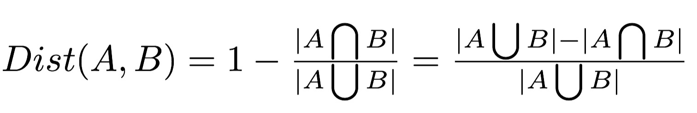

IS 596 / A3
Assignment 3: Tweets Clustering
Data redundancy is an important problem of Twitter. Twitter users are likely to generate similar tweets (e.g., using the Retweet function) about some popular topics/events. By clustering similar tweets together, we can generate a more concise and organized representation of the raw tweets, which will be very useful for many Twitter-based applications (e.g., truth discovery, trend analysis, search ranking, etc.). Clustering is a classic data mining task which requires two essential components: a distance metric to measure similarity between data points and a clustering algorithm that groups data points into different clusters based on the similarity characterized by the distance metric.
In this assignment, you will learn how to cluster tweets by utilizing the Jaccard Distance metric and K-means clustering algorithm.
Objectives:
Compute the similarity between tweets using the Jaccard Distance metric.
Cluster tweets using the K-means clustering algorithm.
Introduction to Jaccard Distance:
The Jaccard distance is a metric that measures dissimilarity between two sample sets (A and B). It is defined as the difference of the sizes of the union and the intersection of two sets divided by the size of the union of the sets.

In this assignment, a tweet can be considered as an unordered set of words such as {a,b,c}. By "unordered", we mean that {a,b,c}={b,a,c}={a,c,b}=...
A Jaccard Distance Dist(A, B) between tweet A and B has the following properties:
It is small if tweet A and B are similar.
It is large if they are not similar.
It is 0 if they are the same.
It is 1 if they are completely different (i.e., no overlapping words).
Here is the reference for more details about Jaccard Distance: Jaccard Distance
Introduction to K-means:
K-means is a classic unsupervised data clustering algorithm. In a nutshell, K-means uses k centroids (points which are the center of a cluster) to define clusters.
A data point is considered to be in a particular cluster if it is closer to that cluster's centroid than to any other centroid. The main steps of K-means are as follows:
- Define k centroids, one for each cluster. The algorithm usually chooses the initial centroids randomly from the data set.
- The K-means algorithm iterates between the following two steps until it converges:
- Assign data points to clusters based on the current selection of the centroids.
- Compute the new centroids based on the updated assignment of data points to clusters.
The algorithm is considered to converge when the assignment of data points to clusters no longer changes.
Here is the reference for more details about the K-means algorithm: K-means Clustering
Hint: Note that the tweets do not have the numerical coordinates in Euclidean space, you might want to think of a sensible way to compute the "centroid" of a tweet cluster.
Exercises:
Implement the tweet clustering function using the Jaccard Distance metric and K-means clustering algorithm introduced above to cluster redundant/repeated tweets into the same cluster. You are expected to do the K-means implementation by yourself, so please do not use any external library that has K-means implementation in your code .
Note that while the K-means algorithm is proven to converge, the algorithm is sensitive to the k initial selected cluster centroids (i.e., seeds) and the clustering result is not necessarily optimal on a random selection of seeds. In this assignment, we provide you with a list of K initial centroids that has been tested to generate good results.
Inputs to your K-means Algorithm:
(1) The number of clusters K=25.
(2) A real world dataset sampled from Twitter during the Boston Marathon Bombing event in April 2013 that contains 251 tweets. Tweet Dataset Download .
(3) The list of initial centroids is here: Initial Seeds . Note that each element in this list is the tweet ID (i.e., the id field in JSON format) of the tweet in the dataset.
What to Turn In :
(1) A result file that contains the clustering results. Each line represents a cluster. It is in the form of cluster_id: a list of tweet IDs that belongs to this cluster
(2) The source code to finish this task.
Extra Credit:
As we discussed above, K-means is known to be sensitive to initial centroids. Now your task is to design and implement an efficient algorithm to find the k initial centroids so that the K-means algorithm you implemented can generate good clustering results (similar as the results you obtained using the 25 seeds we provided to you).
What to Turn In :
(1) A result file that contains the clustering results. Each line represents a cluster. It is in the form of cluster_id: a list of tweet_id that belongs to this cluster
(2) The source code to finish this task.
(3) A README file that briefly explains the main idea and implementation of your algorithm to find the initial seeds.
Notes:
Please submit a README file about how to run your source code.
Please specify your Python version in your Readme file if your code is written a version different from Python 3.6.
Where to Turn In:
Upload your work in a .zip or .tar.gz file to Canvas under Assignments/Assignment 3.
Deadline:
This assignment is due at at the beginning of class on Friday, Oct. 15.